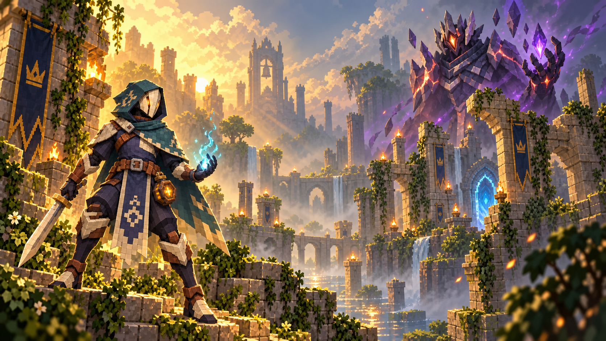
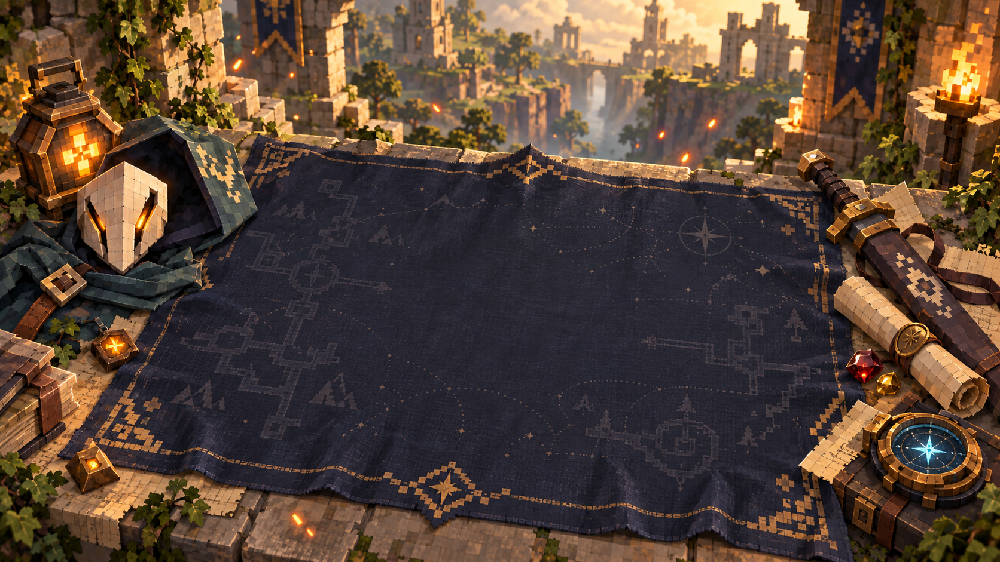
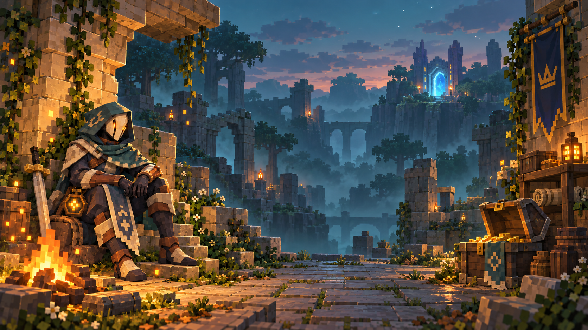
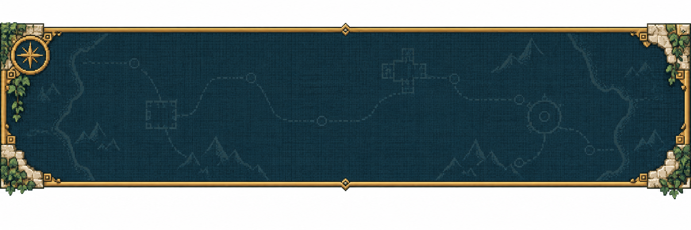

<!doctype html><html lang="zh-CN"><meta charset="utf-8"><meta name="viewport" content="width=device-width,initial-scale=1"><title>MineWorld · 界面与宣传美术</title><style>body{margin:0;padding:24px;background:#102534;color:#ffedc4;font:16px system-ui}main{max-width:1400px;margin:auto}figure{margin:32px 0}img{width:100%;display:block}figcaption{padding:12px 0;color:#d9c59b}a{color:#ffde8a}</style><main><h1>MineWorld · 星火与遗迹</h1><p>原尺寸 PNG，可作宣传素材。游戏内使用轻量 WebP，标题、按钮和进度文字由界面绘制。</p><figure><a href="main-menu.png"></a><figcaption>主菜单 · 星火行者与深渊领主</figcaption></figure><figure><a href="loading-panel.png"></a><figcaption>加载面板 · 遗迹地图与行装</figcaption></figure><figure><a href="pause-menu.png"></a><figcaption>暂停菜单 · 暮色营火</figcaption></figure><figure><a href="quest-panel.png"></a><figcaption>主线任务底板 · 游戏中通过背景裁切隐藏外围留白</figcaption></figure></main></html>
